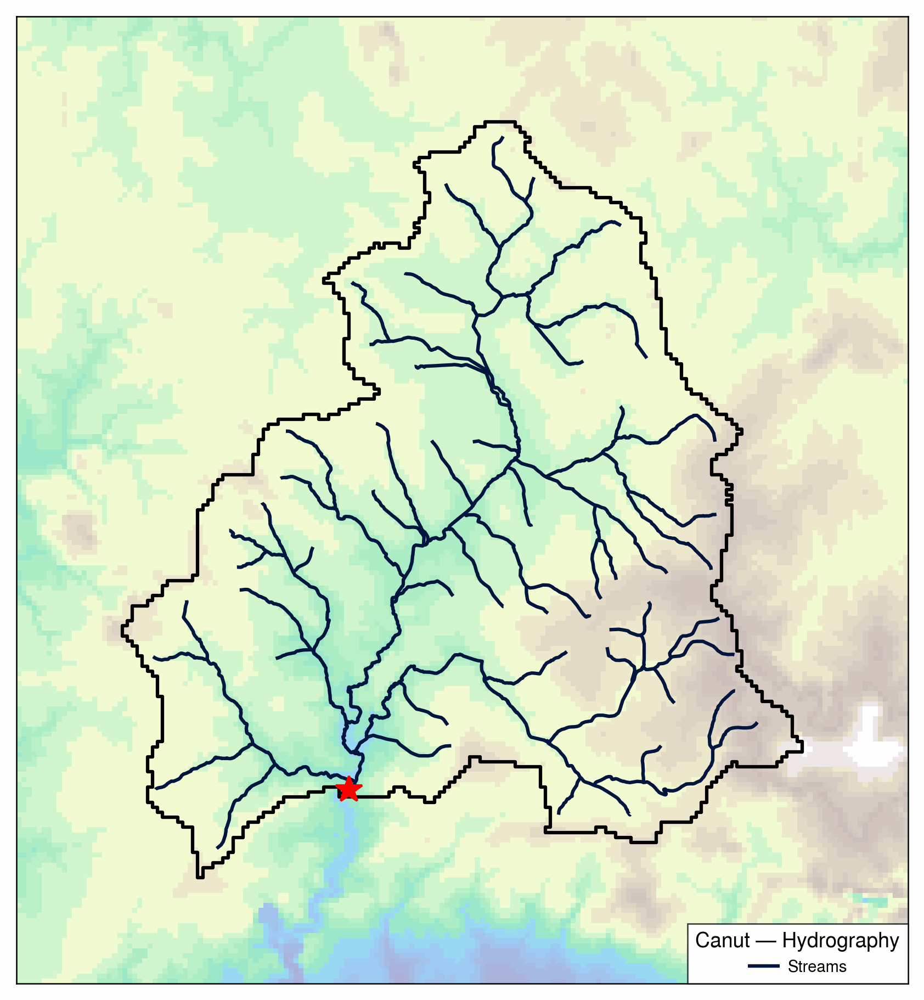
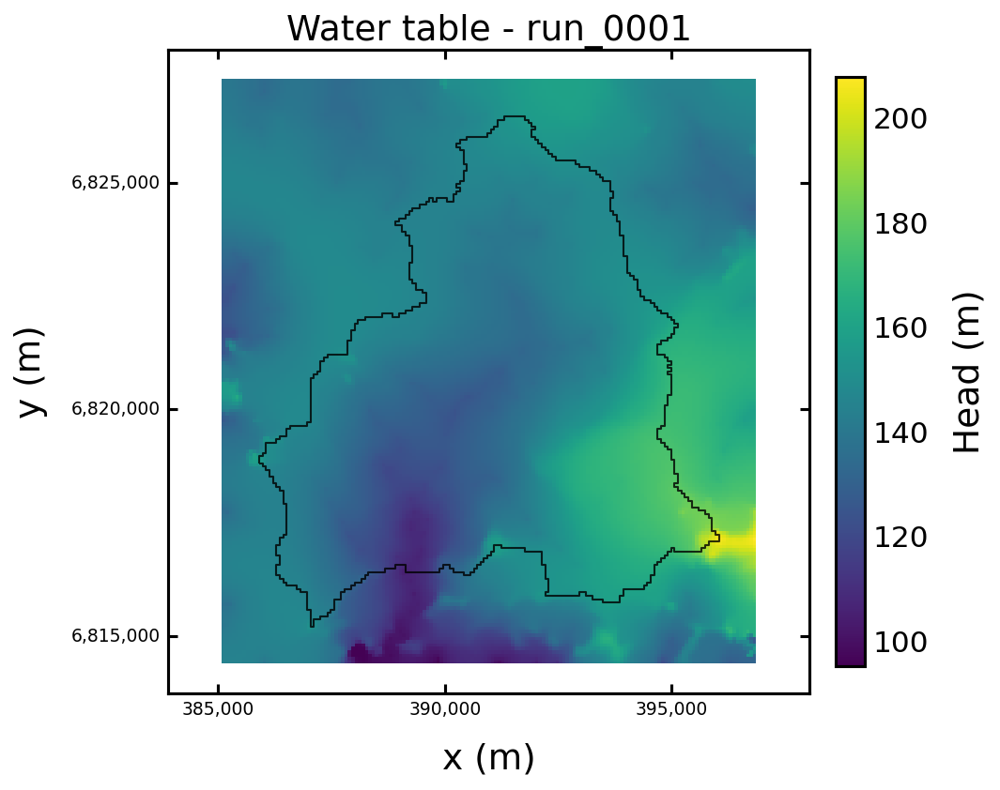
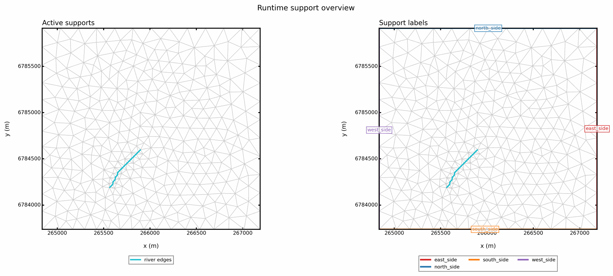
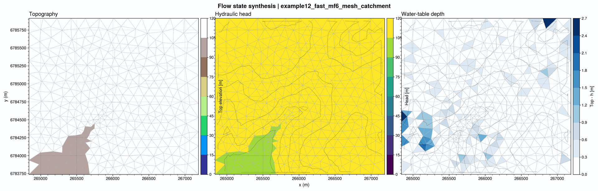

Mesh And Discretization Strategies#
Purpose#
This page documents one of the strongest scientific choices in HydroModPy: the separation between the physical problem, the planar support, the vertical layering, and the solver-specific interpretation of that discretization.
That separation is not only a software concern. It determines:
which geometric constraints the model honours,
how heterogeneous properties are projected to cells,
which comparisons between solvers are scientifically meaningful,
and which numerical errors are likely to dominate.
Common Discretization Chain#
At a high level, HydroModPy turns one catchment description into one solver mesh through the following chain:
domain surfaces (topography + substratum)
-> planar support or runtime mesh
-> vertical layering
-> SolverMesh
-> property / forcing discretization
-> solver packages or finite-volume operators
The key point is that the planar support and the solver backend are not the same thing.
Conceptual Diagram#
Two planar supports are derived from the domain surfaces (topography + substratum) and the support constraints (stream, ocean, zones, catchment outline):
a structured sgrid of raster-aligned quads that approximates the support constraints,
a catchment-conformal planar mesh of triangles or polygons that follows them more explicitly.
Both planar supports are then repeated vertically and assembled into a layered SolverMesh (cell centers, neighbors, layer ids, support labels). The catchment-conformal mesh also reduces to a 2D shallow-flow mesh that exposes a natural planar support without vertical repetition.
Backend wiring:
Backend |
Mesh consumed |
Notes |
|---|---|---|
MODFLOW-NWT |
Structured sgrid ( |
No layered SolverMesh; the structured raster is fed directly. |
MODFLOW 6 |
Layered SolverMesh ( |
|
Boussinesq |
2D shallow-flow mesh |
Finite-volume operators on the natural planar support. |
The figure above shows why HydroModPy keeps mesh choice visible. The same catchment description can feed several backend families, but the numerical contract changes depending on whether the support is raster-aligned, layered, or reduced to one shallow-flow planar mesh.
Result Illustration: Nancon Basin Support To Solver Result#
The Nancon pages are the best first example here because they stay close to one observed basin. They show the practical order in which discretization should be read: basin support first, hydrography and geology second, solver result only after that.




What Nancon Shows, And What It Does Not#
The Nancon example is useful because it connects real input layers with a real basin result:
DEM and basin mask;
hydrography on the basin support;
geology on the same support;
transient MODFLOW-NWT output;
hydrographic-network comparison and active-network diagnostics on top of the simulated state.
It should not be over-read as a demonstration that one discretization is always better than another. In the current committed Nancon NWT case, the key lesson is simpler:
inspect the observed support before the solver result;
report whether the run is structured-grid or runtime-mesh based;
avoid interpreting a map discrepancy as “physics” before checking whether it is partly a support/discretization effect.
Runtime Mesh Contrast#
The committed MODFLOW 6 Gmsh case illustrates a different situation: the support itself is generated as a runtime catchment mesh. It is a useful contrast to Nancon because the mesh is the first-order object to inspect before reading the flow state.


Planar Support Families#
HydroModPy currently exposes two main planar support families.
Family |
Typical geometry |
Main strength |
Main scientific trade-off |
|---|---|---|---|
Structured |
Raster-aligned quadrilateral grid |
Simple, predictable, easy to connect to raster inputs and legacy MODFLOW workflows |
Interfaces such as rivers or geology boundaries are only approximated by the Cartesian grid |
Runtime catchment-conformal mesh |
Irregular planar mesh, typically triangular, generated from catchment, hydrography, and zone constraints |
Better geometric fidelity for rivers, support boundaries, and heterogeneous zones |
Higher numerical sensitivity to cell shape, non-orthogonality, and discretization choices such as XT3D |
Solver-Side Interpretations#
The same scientific case can then be interpreted differently by each solver family.
Backend |
Geometry contract |
What it solves on that geometry |
Practical consequence |
|---|---|---|---|
|
Structured |
Layered groundwater flow on a structured grid |
Best continuity with historical MODFLOW-NWT, MODPATH, and MT3DMS paths |
|
|
Layered groundwater flow on either structured or irregular planar meshes |
Preferred backend when one runtime catchment mesh must be honoured |
|
Triangular planar mesh |
Shallow-groundwater finite-volume balance with explicit groundwater/surface-interaction closures |
Strong for simulation comparison on a shared natural mesh, but not identical in physical scope to a full layered MODFLOW model |
Why Mesh Choice Matters Scientifically#
The mesh does not only affect speed or aesthetics. It changes how the physical system is represented.
On a structured grid:
boundary placement is stair-stepped,
narrow hydrographic features are approximated cell by cell,
heterogeneous zones are often mixed within the same cell,
raster exports and diagnostics are straightforward.
On a catchment-conformal mesh:
rivers and polygon boundaries can be followed more closely,
geological interfaces can be honoured more explicitly,
support cells can be reused across solver-comparison workflows,
but cell orientation and shape quality become first-order numerical issues.
Field-To-Cell Transfer#
HydroModPy separates:
the spatial support that says where a field exists,
the parameter law that says which value the field takes,
the solver mesh that needs one value per cell.
This is why the repository distinguishes:
spatial fields and support objects,
parameter objects such as hydraulic conductivity or storage,
mesh-level discretization steps.
Scientifically, this matters because two very different situations must be distinguished:
a cell is homogeneous because the geology and the mesh align well;
a cell is numerically assigned one value even though several materials or support classes intersect it.
The second case is not wrong by itself, but it must be understood as a parameterization choice rather than as exact geometry preservation.
Why Dedicated Mesh Execution Exists#
Dedicated mesh execution is justified scientifically, not only operationally.
Its main roles are:
to make discretization choices visible before a solve,
to export a reusable support for later solver runs,
to compare two solvers on the same support rather than on two different discretizations,
to perform mesh QA before mixing numerical and physical interpretation.
This is why mesh execution should not be described as mere preprocessing. It is where one of the most consequential modelling choices becomes explicit.
What To Check Before Solving#
Before interpreting any result, the mesh or grid should be checked against at least the following questions.
Do topography and substratum define a physically valid thickness everywhere?
Does the mesh actually follow the intended river and zone constraints?
Are there sliver or highly distorted cells that are likely to dominate the numerical error?
Is the resolution transition too abrupt between refined and coarse zones?
Are key boundaries represented by explicit support labels rather than only by geometric coincidence?
Is the proportion of mixed geology cells acceptable for the intended study?
Is the support reusable across solver-comparison runs?
Structured grids and irregular meshes fail these checks in different ways, so the QA criteria should not be reduced to one generic “mesh quality” number.
Practical Choice Guide#
The choice below is not absolute, but it reflects the current project logic.
On Nancon today, the public NWT case is the natural structured-grid reference. Use it when the question is “how do observed support layers, MODFLOW-NWT package assembly, and basin diagnostics connect?” Use a runtime catchment-conformal mesh when the question is explicitly about support fidelity or solver comparison on a shared irregular support.
If the main goal is to… |
Prefer |
Because |
|---|---|---|
Keep a legacy MODFLOW-NWT or transport workflow stable |
Structured |
It preserves the historical structured-grid contracts expected by NWT, MODPATH, and MT3DMS tooling |
Compare MODFLOW 6 and Boussinesq on the same natural support |
Runtime catchment-conformal mesh |
The support becomes a shared reference instead of a hidden source of discrepancy |
Preserve rivers and polygon boundaries more faithfully |
Runtime catchment-conformal mesh |
The geometry can follow those constraints explicitly |
Stay close to raster-based inputs and outputs |
Structured |
Resampling, plotting, and GeoTIFF exports are simpler and more direct |